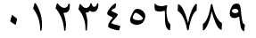
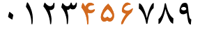
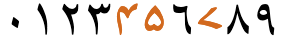
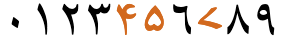
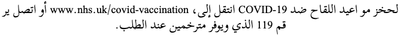
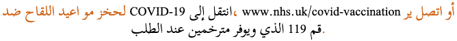
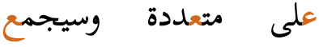
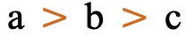
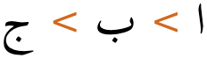
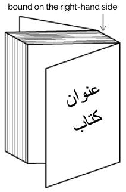

This page brings together basic information about the Arabic script and its use for the Sindhi language. It aims to provide a brief, descriptive summary of the modern, printed orthography and typographic features, and to advise how to write Sindhi using Unicode.
Select part of this sample text to show a list of characters, with links to more details.
Change size: 28px
آرٽيڪل 1. سمورا ينسان آزاد ۽ عزت ۽ حقن جي حوالي کان برابر پيدا ٿيا آهن. انهن کي عقل ۽ ضمير حاصل ٿيو آهي⹁ ان ڪري انهن کي هڪ ٻئي سان ڀائيچاري وارو سلو ڪ اختيار ڪرڻ گهرجي.
آرٽيڪل 2. هر فرد انهن سمورين انساني آزادين ۽ حقن جو حقدار آهي⹁ جيڪي هن اعلان ۾ بيان ڪيل آهن ۽ ان حق تي رنگ⹁ نسل⹁ جنس⹁ زبان⹁ مذهب ۽ سياسي متڀپد جو يا ڪنهن نه قسم جي عقيدي⹁ قوم⹁ سماج⹁ دولت يا خانداني حيثيت جو ڪوئي فرق نه پوندو⹁ ان کان سو اءِ جنهن ماڪ يا علائقي سان اهو فرد تعلق رکي ٿو⹁ ان جي سياسي ڪيفيت يا اختيار جو دائرو بين القوامي حيثيت جي بنياد تي ان سان ڪوئي فرق وارو سلوڪ اختيار نه ڪيو ويندو⹁ ڀلي اهو ملڪ آزاد هجي يا ڪاڻيارو يا غير مختيار هجي يا سياسي اختيار جي حوالي سان ڪنھن ٻين پابنديءَ جو شڪار هجي.
Sindhi is an Indo-Aryan language spoken by approximately 30 million people in the Pakistani province of Sindh, where it holds official status. Additionally, around 1.7 million people in India speak Sindhi, although it lacks state-level official status there. The primary writing system for Sindhi is the Perso-Arabic script, which is predominantly used in Pakistan. In India, both the Perso-Arabic script and Devanagari are employed for writing Sindhi.
During the Arab conquest of Sindh in the 8th century, the Arabic script was introduced to the region. Over time, it became the primary writing system for Sindhi. The Sindhi-Arabic script was standardized in 1853 by British colonial authorities and has been in general use since then.
The Arabic script is an abjad, ie. short vowels are not normally written. See the table to the right for a brief overview of features for the Sindhi language.
The Sindhi Arabic orthography is derived from the Arabic/Persian abjads, where in normal use the script represents long vowel sounds using matres lectionis. However, the script has been adapted in this orthography in order to cope with the many more vowels sounds in Sindhi; there are many unique letters, and the use of letters for vowels is a distinguisher of vowel quality, rather than length.
Sindhi text runs right to left in horizontal lines, but numbers and embedded Latin text are read left-to-right. There is no case distinction. Words are separated by spaces.
Sindhi represents consonant sounds using 49 basic letters and 7 more digraphs for aspirated sounds. A number of consonant sounds can be written with alternative consonant letters since the original spelling is retained for many words. But there are also 15-20 letters that are only used for Sindhi.
Dedicated letters are available for some aspirated consonant sounds, but others are represented using the aformentioned digraphs.
Sindhi uses 3 code points for sounds related to h, but they are used very inconsistently in the wild, creating difficulties for searching and other operations. Unicode experts recommend specific roles for each of the letters, but in some joining contexts there is no difference in appearance, which makes mistakes possible.
The Sindhi abjad indicates the location of 7 vowel sounds using 4 letters. Three more sounds are not normally written.
When needed, all vowels can be unambiguously represented using the letters and 3 combining marks. Post-consonant vowel sounds are written using the same code points, regardless of the position within a word.
On the other hand, standalone vowels are preceded by or attached to a letter that varies according to whether it occurs at the beginning of a word or word-medially, and in some cases word-finally. These carrier letters are 0627, 0626, and 0621, respectively.
Nasalisation is indicated using ن. Vowel absence is not normally marked. Even in vowelled text, the sukun is infrequently used.
Kashmiri uses native digits, and a mixture of ASCII and Arabic code points for punctuation marks, but uses reversed comma and semicolon punctuation marks.
The following represents the repertoire of the Sindhi language.
Click on the sounds to reveal locations in this document where they are mentioned.
Phones in a lighter colour are non-native or allophones. Source Wikipedia.
Vowel sounds
Plain vowels
Consonant sounds
labial
labio- dental
alveolar
post-
alveolar
retroflex
palatal
velar
uvular
glottal
stop
pb
td
t͡ɕd͡ʑ
kɡ
q
ʔ
pʰbʰ
tʰdʰ
ʈʰɖʰ
t͡ɕʰd͡ʑʰ
kʰɡʰ
implosive
ɓ
ɗ
ʄ
ɠ
fricative
f
sz
ʂ
xɣ
hɦ
nasal
m
n
ɳ
ɲ
ŋ
mʰ
nʰ
ɳʰ
approximant, trill, flap
ʋ
rl
ɽ
j
lʰ
ɽʰ
Tone
Sindhi is not a tonal language.
Structure
tbd
Vowels
Vowel summary table
This table summarises only basic vowel to character assignments. Click on the phonetic transcriptions for more detail.
Vowel diacritics are shown in this table. In normal text these diacritics do not appear. Where I have not yet seen an example, a question mark appears. From right to left, the columns indicate word-initial standalone forms, word-medial standalone forms, and post-consonant forms.
The Sindhi abjad indicates the location of 7 vowel sounds using 4 letters. Three more sounds are not normally written.
When needed, all vowels can be unambiguously represented using the letters and 3 combining marks. Post-consonant vowel sounds are written using the same code points, regardless of the position within a word.
Vowel letters
Normally speaking, after a consonant, Sindhi represents certain vowel sounds using the following consonant letters, and other vowel sounds are not written at all.
ي␣و␣ع␣ا
See examples of these letters below. The words include an unwritten vowel sound (one of ɪ ʊ ə) and a vowel sound indicated by one of the above letters (i u æ o ɑ).
سنڌي
لوڻ
قلعو
برابر
Text without vowel diacritics can sometimes have ambiguous readings. For example, take the following word:
شڪر
When vowel diacritics are applied, the following 3 different pronunciations and meanings are possible for this sequence of letters.
شَڪَرِ
شُڪْرُ
شُڪُرُ
Combining marks used for vowels
Where needed, vowel sounds can be clarified using diacritics, as shown in basicV.
As just mentioned, some vowels in post-consonant position (ɪ, ʊ, and ə) are normally not written (or distinguished, one from another) at all, because the diacritics are not used in normal text.
The combining marks are listed just below, but it is the combination of these diacritics with other letters that determines the intended pronunciation. In other cases, such as for e and o, in vowelled text the absence of a diacritic can distinguish these sounds from i and u. See basicV for details.
ِ␣ُ␣َ
The following 2 additional combining marks can be found in decomposed text (only).
ٓ␣ٔ
Vowel length
Vowel length appears to be somewhat inconsistent. There are no special diacritics or conventions from separating long from short vowels.
Nasalisation
ن
Nasalisation is common in Sindhi, and is indicated using the letter ن.
متان
Observation: It's not always clear from transcriptions whether there is a difference between nasalisation or nasal coda, eg.
شينهن
Standalone vowels
Standalone vowels are written in 3 different ways in Sindhi. See basicV for the various forms. The following characters are used as vowel carriers.
ا␣ئ␣ء
Vowels that are only distinguished by diacritics are not distinguished in normal text, and the sound represented by the standalone vowel carrier is ambiguous.
Word-initial standalone vowels are written using ا as a vowel carrier.
اتر
اسين
اوڪڻ
اونڪارڻ
Word-medial standalone vowels use ئ as the vowel carrier.
ڏئڻ
سائو
ڳئون
آئون
Word-final standalone vowels ɪ, ʊ, and ə use ء as the vowel carrier.
جوء
جونء
ڀاء
Note how the vowel carrier is used after ن when that represents a nasalisation of the vowel.
ڪانئر
پنئن
Vowel sounds to characters
This section maps Sindhi vowel sounds to common graphemes in the Arabic orthography.
Although the items in this list are fully vowelled, diacritics are not normally shown. Examples reflect this by showing both standard and vowelled text. Standalone vowels are common, and their form is typically distinct, so they are also shown here.
i
initialاِيeg. ايران
medialِيeg. زمين
finalِيeg. هاٿي
m standaloneئِي
f standaloneئِيeg. سئي
ɪ
initialاِeg. ارادو
medialِeg. تٿ
finalِeg. شڪر
m standaloneئِپائڻ
f standaloneءِeg. جوء
ʊ
initialاُeg. اتر
medialُeg. زبان
finalُeg. جبل
m standaloneئُ
f standaloneءُeg. ڀاء
u
initialاُوeg. اوناڙڻ
medialُوeg. لوڻ
finalُوeg. ڪڱگو
m standaloneئُوڳئون
f standaloneئُو
e
medialيeg. تيز
finalيeg. ڪٿي
m standaloneئيائين
f standaloneئي
o
initialاوeg. اوڀر
medialوeg. افسوس
finalوeg. آنو
m standaloneئو
f standaloneئوسائو
ə
initialاَeg. افسوس
medialَeg. اتر
finalَeg. برف
m standaloneئَپئڻ
f standaloneءَجونء
æ
initialعeg. علائقو
medialعeg. قلعو
a~ɑ
initialآeg. آسمان
medialاeg. برابر, انار
finalاeg. راجا
m standaloneاسيارو
f standaloneا
Vowel absence
Sindhi doesn't normally use any mark to indicate a consonant cluster or consonant without a following vowel. A cluster is simply written as a sequence of consonants.
ْ
Vowelled text may use ْ, but it is rare.
ورسپت
Consonants
Consonant summary table
This table summarises only basic consonant to character assignments. Click on the phonetic transcriptions for more detail.
Six more consonant letters are hangovers from the original spellings of loan words.
ط␣ث␣ص␣ذ␣ض␣ظ
The final and isolated forms of م have a short tail in Sindhi, rather than the long downwards tail in many other orthographies, such as Arabic, Persian, & Urdu.
Aspiration
A number of Sindhi phones are accompanied by aspiration. This is indicated in the orthography in 2 different ways, depending on the base consonant.
The following consonants indicate aspiration by a dedicated glyph:
ڦ␣ڀ␣ٿ␣ڌ␣ٺ␣ڍ␣ڇ␣ک
The other aspirated consonants, listed below, use a digraph with ھ.
جھ␣گھ␣مھ␣نھ␣ڻھ␣ڙھ␣لھ
Variant forms of heh
Recent discussions in Unicode committees have highlighted how historical limitations of technology have lead to an inconsistent use of code points and glyphs to represent the various forms of heh in Sindhi. An attempt was made by Evanslesd and Mansourkmsd to provide guidelines for correct usage which would promote consistency looking forward.
The scenarios that involve a form of heh are the following:
The phoneme h as used for a syllable onset.
In this case use ه.
لاهور
An aspiration marker following several consonants.
For this, use ھ.
پڙھڻ
The so-called 'silent heh', which only occurs word-finally, and which generally is either silent or represents a waning breath after a short vowel.
For this, use ہ.
بيکہ
The confusion around which code point to use is understandable where the glyph shapes look the same, but it is easy to find examples that don't match the advice of the Unicode experts even where the codepoints used result in a different glyph from that you would expect. The following table shows expected forms when rendered for each code point.
character
right-joining
medial
left-joining
ه
ه
ه
ه
ھ
ھ
ھ
ھ
ہ
ہ
ہ (n/a)
ہ (n/a)
Consonant sounds to characters
This section maps Sindhi consonant sounds to common graphemes in the Arabic orthography.
The right-hand side of each item shows various joining forms.
Sounds listed as 'infrequent' are allophones, or sounds used for foreign words, etc. Light coloured characters occur infrequently.
Joining forms
p
067E067E067E067Econsonantپ
pʰ
06A606A606A606A6consonantڦ
b
0628062806280628consonantب
bʰ
0680068006800680consonantڀ
ɓ
067B067B067B067Bconsonantٻ
t
062A062A062A062Aconsonantت
0637063706370637consonantطAllograph, retained for loan words.
tʰ
067F067F067F067Fconsonantٿ
t͡ɕ
0686068606860686consonantچ
t͡ɕʰ
0687068706870687consonantڇ
d
062F062Fconsonantد
dʰ
068C068Cconsonantڌ
d͡ʑ
062C062C062C062Cconsonantج
d͡ʑʰ
062C062C062C062Cconsonantجھ
consonantجھہ
ɗ
068F068Fconsonantڏ
ʈ
067D067D067D067Dconsonantٽ
ʈʰ
067A067A067A067Aconsonantٺ
ɖ
068A068Aconsonantڊ
ɖʰ
068D068Dconsonantڍ
ʄ
0684068406840684consonantڄ
k
06AA06AA06AA06AAconsonantڪ
kʰ
06A906A906A906A9consonantک
ɡ
06AF06AF06AF06AFconsonantگ
ɡʰ
06AF 06BE06AF 06BE06AF 06BE06AF 06BEconsonantگھ
consonantگھہ
ɠ
06B306B306B306B3consonantڳ
q
0642064206420642consonantق
f
0641064106410641consonantف
s
0633063306330633consonantس
0635063506350635consonantصAllograph used for loan words.
062B062B062B062BconsonantثAllograph used for loan words.
z
06320632consonantز
06300630consonantذAllograph used for loan words.
0638063806380638consonantظAllograph used for loan words.
0636063606360636consonantضAllograph used for loan words.
ʂ
0634063406340634consonantش
x
062E062E062E062Econsonantخ
ɣ
063A063A063A063Aconsonantغ
h
0647064706470647consonantهFor syllable onsets.
062D062D062D062DconsonantحAllograph used for loan words.
06C1silent heہLike a waning breath when pronounced, but this is more often silent. Used in word-final position only.
This section offers advice about characters or character sequences to avoid, and what to use instead. It takes into account the relevance of Unicode Normalisation Form D (NFD) and Unicode Normalisation Form C (NFC)..
Although usage is recommended here, content authors may well be unaware of such recommendations. Therefore, applications should look out for the non-recommended approach and treat it the same as the recommended approach wherever possible.
Writing heh
Unicode has a range of code points dedicated to the sound referred to as heh. Some of the code points are separate because they produce different glyphs in positional forms than others; sometimes the difference is semantic. For want of guidelines, and due to historical technological complications, Sindhi users tend to make use of code points in creative ways, typically employing any code point that produces the glyph form they expect to see in a given context.
The inconsistencies produced by this approach hamper search and other machine-based algorithms that deal with the text.
Recently Unicode committees have been considering recommendations for consistent usage which are described in the section heh.
Canonically equivalent encodings
Two letters can be represented as an atomic character (the norm), or as a sequence of base letter plus combining mark. The parts are separated in Unicode Normalisation Form D (NFD), and recomposed in Unicode Normalisation Form C (NFC), so both approaches should be treated as canonically equivalent.
Atomic (recommended)
Decomposed ( NOT recommended )
آ
0627 0653
ئ
064A 0654
Normally, text will use the atomic form, and this is generally recommended by the Unicode Standard.
Confusables & spelling errors
This table lists characters that are often mistakenly used because they look the same as or similar to the code points used for Sindhi, or perhaps because the correct character is not available on the user's keyboard.
Incorrect
Correct
Notes
06CC
064A
The Farsi YEH drops the dots below in isolate and final positions.
Codepoint sequences
Combining marks always follow the base character.
Numbers
Digits
Sindhi uses the set of native digits in the Unicode Arabic block known as Eastern Arabic-Indic digits.
۰␣۱␣۲␣۳␣۴␣۵␣۶␣۷␣۸␣۹
The glyph shapes are typically different for 3 of the digits (although not always the same 3 digits) in Persian, Urdu and Sindhi.
Arabic

Persian

Urdu

Sindi

Arabic-indic numerals, as used in Arabic, Persian, Urdu and Sindhi language text.
Text direction
Arabic script text is written horizontally and right-to-left in the main but, as in most right-to-left scripts, numbers and embedded text in other scripts are written left-to-right (producing 'bidirectional' text).
Arabic words are read right-to-left, starting from the right of this line, but numbers and Latin text (highlighted) are read left-to-right.
The Unicode Bidirectional Algorithm automatically takes care of the ordering for all the text in fig_bidi, as long as the 'base direction' is set to RTL. In HTML this can be set using the dir attribute, or in plain text using formatting controls.
If the base direction is not set appropriately, the directional runs will be ordered incorrectly as shown in fig_bidi_no_base_direction, making it very difficult to get the meaning.


The exact same sequence of characters with the base direction set to RTL (top), and with no base direction set on this LTR page (bottom). Certain items are highlighted to help track their position.
For authoring HTML pages, one of the most important things to remember is to use <html dir="rtl" … > at the top of the page. Also, use markup to manage direction, and do not use CSS styling.
Managing text direction
Unicode provides a set of 10 formatting characters that can be used to control the direction of text when displayed. These characters have no visual form in the rendered text, however text editing applications may have a way to show their location.
202B (RLE), 202A (LRE), and 202C (PDF) are in widespread use to set the base direction of a range of characters. RLE/LRE comes at the start, and PDF at the end of a range of characters for which the base direction is to be set.
In Unicode 6.1, the Unicode Standard added a set of characters which do the same thing but also isolate the content from surrounding characters, in order to avoid spillover effects. They are 2067 (RLI), 2066 (LRI), and 2066 (PDI). The Unicode Standard recommends that these be used instead.
There is also 2068 (FSI), used initially to set the base direction according to the first recognised strongly-directional character.
061C (ALM) is used to produce correct sequencing of numeric data. Follow the link and see expressions for details.
200F (RLM) and 200E (LRM) are invisible characters with strong directional properties that are also sometimes used to produce the correct ordering of text.
Sequences of numbers are sets of numbers separated by punctuation or spaces, such as 10–12–2022. Sequences of digits, such as 123, in Arabic script text run LTR automatically. Expressions and sequences of numbers follow somewhat complicated rules, which are described in the Arabic language orthography notes.
Arabic script is always cursive, ie. letters in a word are joined up. Fonts need to produce the appropriate joining form for a letter, according to its visual context, but the code point used doesn't change. This results in four different shapes for most letters (including an isolated shape). Ligated forms also join with characters alongside them.
The highlights in the example below show the same letter, ع, with three different joining forms.

The letter ع (ain) in 3 different joining contexts.
Most Arabic script letters join on both sides. A few only join on the right-hand side: this involves 4 basic shapes for Modern Standard Arabic.
ء doesn't join on either side.
Cursive joining forms
Most dual-joining characters add or become a swash when they don't join to the left. A number of characters, however, undergo additional shape changes across the joining forms. fig_joining_forms and fig_right_joining_forms show the basic shapes in Modern Standard Arabic and what their joining forms look like. Significant variations are highlighted.
isolated
right-joined
dual-join
left-joined
Sindhi letters
ب
ـب
ـبـ
بـ
پ␣ت␣ٽ␣ب␣ٿ␣ٺ␣ڀ␣ٻ␣ث
ن
ـن
ـنـ
نـ
ن␣ڻ
ق
ـق
ـقـ
قـ
ق
ف
ـف
ـفـ
فـ
ڦ␣ف
س
ـس
ـسـ
سـ
س␣ش
ص
ـص
ـصـ
صـ
ص␣ض
ط
ـط
ـطـ
طـ
ط␣ظ
ک
ـک
ـکـ
کـ
گ␣ک␣ڳ␣ڱ
ڪ
ـڪ
ـڪـ
ڪـ
ڪ
ل
ـل
ـلـ
لـ
ل
ه
ـه
ـهـ
هـ
ه
ھ
ـھ
ـھـ
ھـ
ھ
م
ـم
ـمـ
مـ
م
ع
ـع
ـعـ
عـ
ع␣غ
ح
ـح
ـحـ
حـ
چ␣ج␣ڇ␣ڄ␣خ␣ح␣ڃ
ي
ـي
ـيـ
يـ
ي␣ئ
Joining forms for shapes that join on both sides..
isolated
right-joined
MSA letters
ا
ـا
ا
ر
ـر
ز␣ر␣ڙ
د
ـد
د␣ڊ␣ڌ␣ڍ␣ڏ␣ذ
و
ـو
و
Joining forms for shapes that join on the right only.
Managing glyph shaping
200D (ZWJ) and 200C (ZWNJ) are used to control the joining behaviour of cursive glyphs. They are particularly useful in educational contexts, but also have real world applications.
ZWJ permits a letter to form a cursive connection without a visible neighbour. For example, the marker for hijri dates in Arabic is an initial form of heh, even though it doesn't join to the left, ie. ه. For this, use ZWJ immediately after the heh, eg. الاثنين 10 رجب 1415 ه..
ZWNJ prevents two adjacent letters forming a cursive connection with each other when rendered. For example, it is used in Persian for plural suffixes, some proper names, and Ottoman Turkish vowels. Ignoring or removing the ZWNJ will result in text with a different meaning or meaningless text, eg, تنها is the plural of body, whereas تنها is the adjective alone.2 The only difference is the presence or absence of ZWNJ after noon.
034F is used in Arabic to produce special ordering of diacritics. The name is a misnomer, as it is generally used to break the normal sequence of diacritics.
Context-based shaping & positioning
In addition to the cursive shaping, Arabic script glyphs also require context-dependent shaping and positioning. For more information, see the Arabic language orthography notes.
The usual mandatory ligature applies for لا.
لاسي
اخلاق
Typographic units
Word boundaries
Words are separated by spaces.
Graphemes
tbd
Phrase, sentence, and section delimiters are described in phrase.
Punctuation & inline features
Phrase & section boundaries
⹁␣:␣⁏␣.␣؟␣!␣—
Sindhi uses a mixture of ASCII, Arabic, and other punctuation.
phrase
⹁
⁏
:
sentence
.
۔
؟
!
The Unicode Standard says that Sindhi uses the reversed comma and semicolon, rather than the Arabic punctuation marks ، and ؛.u16,#G3681 However, it is easy to find text in Sindhi that uses the Arabic punctuation.
Some Sindhi texts use . as a full stop, whereas others use ۔.
Sindhi commonly uses ASCII parentheses to insert parenthetical information into text.
start
end
standard
(
)
Mirrored characters
The words 'left' and 'right' in the Unicode names for parentheses, brackets, and other paired characters should be ignored. LEFT should be read as if it said START, and RIGHT as END. The direction in which the glyphs point will be automatically determined according to the base direction of the text.

b > c" data-notes="Scheherazade New 48px">

ب > ج" data-notes="Scheherazade New 48px">
Both of these lines use >U+003E GREATER-THAN SIGN, but the direction it faces depends on the base direction at the point of display.
The number of characters that are mirrored in this way is around 550, most of which are mathematical symbols. Some are single characters, rather than pairs. The following are some of the more common ones.
The following type of quotation mark can be found in Sindhi texts. When quoted text appears within quoted text different characters are used, though usually of the same type. (Of course, depending on ease of input, quotations may also be surrounded by ASCII double and single quote marks.)
start
end
primary
”
“
nested
’
‘
Unlike brackets, these quote marks are notmirrored during display. As a result, LEFT means use on the left, and RIGHT means use on the right.
Line & paragraph layout
Line breaking & hyphenation
Lines are generally broken between words. They are not broken at the small gaps that appear where a character doesn't join on the left.
Line-edge rules
As in almost all writing systems, certain punctuation characters should not appear at the end or the start of a line. The Unicode line-break properties help applications decide whether a character should appear at the start or end of a line.
The following list gives examples of typical behaviours for characters affected by these rules. Context may affect the behaviour of some of these and other characters.
« “ ‘ ( should not be the last character on a line
» ” ’ ) . ⹁ ⁏ ؟ ! should not begin a new line
Breaking between Latin words
When a line break occurs in the middle of an embedded left-to-right sequence, the items in that sequence need to be rearranged visually so that it isn't necessary to read lines upwards.
latin-line-breaks shows how two Latin words are apparently reordered in the flow of text to accommodate this rule. Of course, the rearragement is only that of the visual glyphs: nothing affects the order of the characters in memory.
In this Arabic language text, the lower of these two images shows the result of decreasing the line width, so that text wraps between a sequence of Latin words.
Page & book layout
General page layout & progression
Sindhi books, magazines, etc., are bound on the right-hand side, and pages progress from right to left.

Binding configuration for Sindhi books, magazines, etc.
Columns are vertical but run right-to-left across the page.